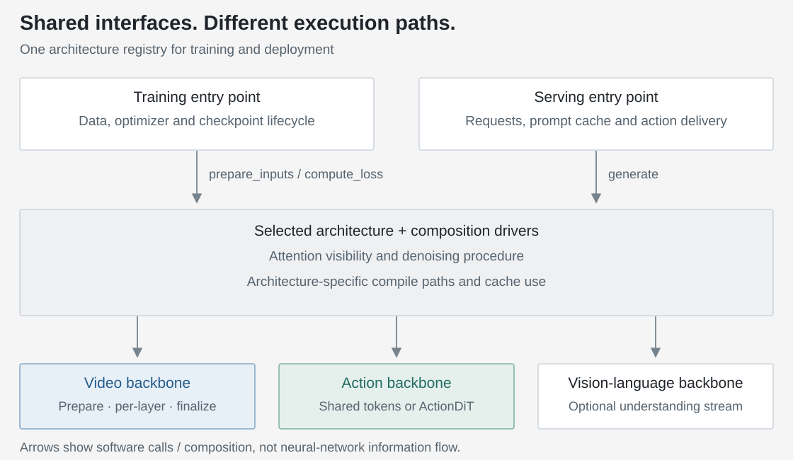
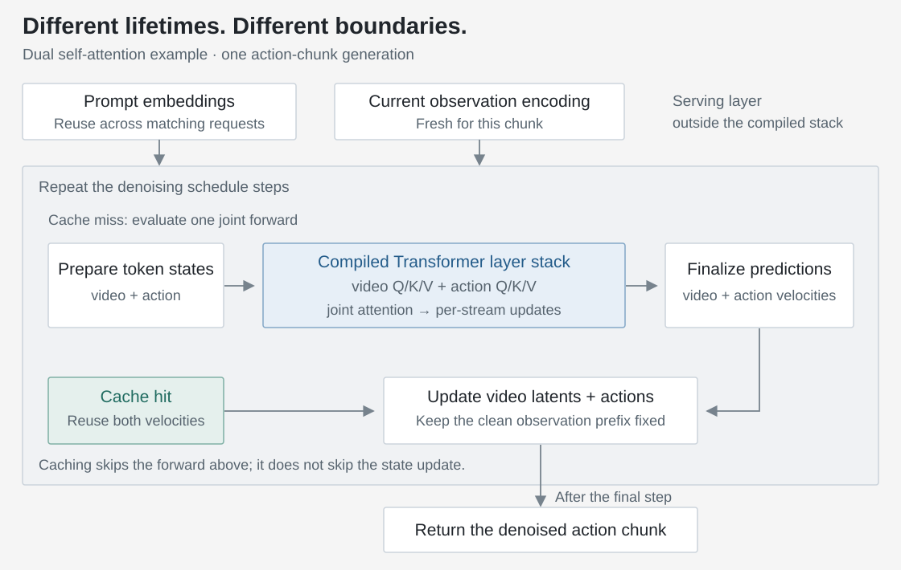
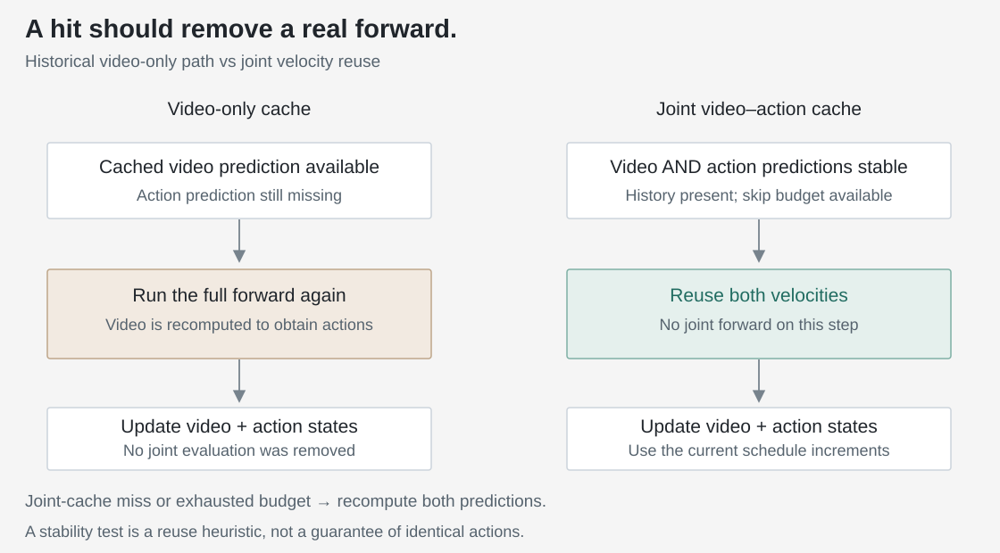
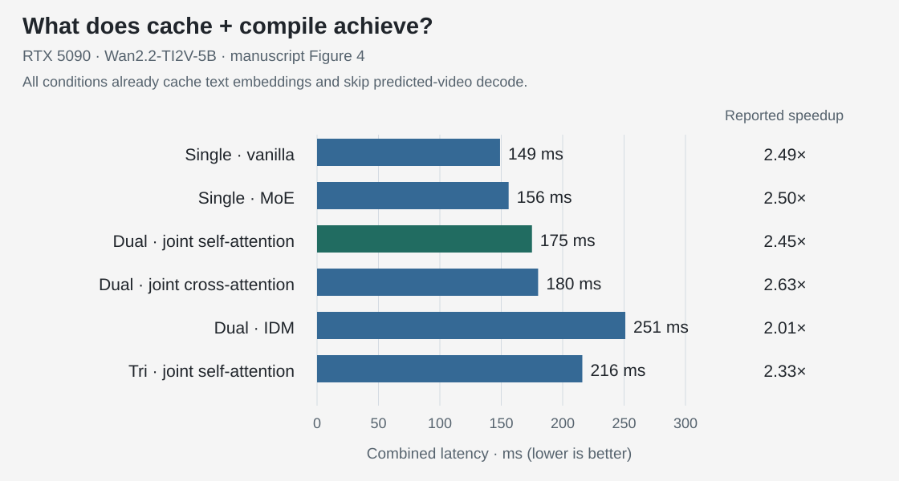

01 / Start with the execution path
A new action chunk should not restart every computation.
A world–action model predicts future visual latents and actions together. That is useful structure, but it creates nested work: a request prepares observations, a denoising loop repeatedly evaluates the model, and each evaluation walks through many Transformer layers. Optimizing the wrong boundary can leave most of that work untouched.
| Work | Useful lifetime | Design decision |
|---|---|---|
| Encode the instruction | Across requests for the same prompt, until eviction | Reuse text embeddings in the serving process |
| Encode current observations | One new observation window | Keep fresh conditioning for each chunk |
| Predict video/action velocities | One evaluated denoising step | Compile the hot path; reuse only when sufficiently stable |
| Decode predicted video to pixels | Only when someone needs the video | Omit it from the action-only response path |
Two different levers: compilation makes an evaluated forward cheaper; velocity caching reduces how many forwards are evaluated. Neither should be confused with making the robot’s action buffer last longer.
02 / Modular does not have to mean slow
Keep the interfaces flexible. Make the repeated path concrete.
The architecture study asks how video and action should exchange information. Deployment adds a different question: where can that chosen computation be captured and reused without changing its meaning?
Codebase design: shared interfaces, architecture-specific execution.
Reuse the surrounding workflow. The trainer and deployment loader resolve the model configuration through the same architecture registry. Training calls the architecture’s input-preparation and loss interfaces; the serving engine adapts requests to its generation interface and manages prompt caching. This keeps model selection consistent across training and deployment while letting each side manage its own lifecycle.
Keep real differences explicit. Architecture implementations organize the backbone modules, attention visibility and denoising procedure. The video interface exposes preparation, per-layer execution and final prediction. Actions have two distinct contracts: shared-backbone models encode/decode action tokens within the video stack, whereas an independent ActionDiT exposes its own Transformer execution. These are supported compositions, not a promise that every backbone and architecture can be combined arbitrarily.

Localize an optimization, then test its boundary. Compile setup can select a joint layer loop, an action-side pass or backbone block hooks without changing the serving interface. The velocity-cache utility owns cached predictions; the architecture decides when those predictions can replace a forward. Configuration switches, eager fallback and targeted tests make these choices inspectable. My compile and joint-cache changes fit into these boundaries within the team’s codebase.
Source map · where these responsibilities live
openwam/
train/openwam_trainer.py # training lifecycle
model/
architectures/registry.py # shared model selection
architectures/ # composition, loss, generation, fast paths
video_backbone/ # video model and encoder interfaces
action_backbone/ # shared-token or independent ActionDiT contracts
vlm_backbone/ # optional vision-language backbone
deploy/
engine.py # request adapter and prompt cache
executors/ # synchronous/asynchronous action delivery
optimizations/dit_cache.py # velocity storage and reuse gate
tests/
test_wam_architecture.py # architecture behavior and forward-call checks
test_dit_cache.py # stability, skip limits and storage lifetimeSelected paths from the inspected implementation, not the full repository tree. A common entry point does not imply identical support or execution across every model combination.
From interfaces to compiled execution.
Inside the joint self-attention path, a composition driver coordinates the streams. At an interaction layer, each backbone produces its own queries, keys and values; the driver applies the selected joint attention, then returns each result to its own stream. The driver organizes execution rather than adding another learned model.

This separation makes the compile target architecture-specific. A joint self-attention model and a cross-attention model should not be forced through an identical wrapper merely because both expose a policy API.
| Architecture | Compiled or reusable boundary | Why that boundary fits |
|---|---|---|
| Dual joint self-attention | Joint video–action layer loop | The streams interact inside each designated attention layer |
| Dual joint cross-attention | Action forward over collected video-bridge tensors | Video features are available before the action-side pass |
| IDM · inverse dynamics | Video stage and action stage over fixed video keys/values | Generated video becomes fixed conditioning for repeated action denoising |
| Tri-system joint attention | Dedicated three-stream layer loop | The understanding stream participates in a different composition |
| Single-system / direct video path | Video-backbone block hooks | A separate action-side loop is not available in the shared stack |
In the inspected implementation, ordered tensor tuples provide compile-friendly boundaries for bridge features and cached keys/values. The driver also builds the joint attention mask once per forward and reuses it across layers. These are execution-layout choices: they preserve the intended information paths rather than replacing the policy with a smaller model.
PyTorch · what exactly gets compiled?
def compile_joint_layers(driver, enabled=True):
"""Compile the layer stack of ONE forward, not the full denoising loop."""
def run_layers(video_state, action_state):
return driver.run_joint_loop(
video_state,
action_state,
use_gradient_checkpointing=False,
use_gradient_checkpointing_offload=False,
)
if not enabled:
return run_layers
return torch.compile(run_layers, mode="default", dynamic=False)Reduced from the dual-system self-attention path. The real architecture supplies the driver and prepared states; production code also handles configuration and eager fallback. Install the callable once during deployment setup, not at every denoising step. This helper does not compile the entire server request or all diffusion steps into one graph.
Fixed shapes can improve reuse, but first-call compilation is a separate cost. The manuscript describes CUDA graph replay in its acceleration stack; torch.compile alone does not guarantee replay for every backend, mode or execution path.
Why compilation and caching can work together. The cache gate stays outside the compiled layer stack. A miss invokes the forward with its compiled hot path; a hit bypasses that forward and reuses its outputs. Both paths still perform the scheduled state update. Changed input shapes may trigger recompilation, so warmup and steady-state measurements must use the intended deployment shapes.
03 / Fewer forwards, not just more cache hits
A video-only cache can leave the expensive work untouched.
The early implementation exposed a useful trap. It cached the video prediction, but on a cache hit the joint policy still needed an action prediction. Obtaining that action reran the full forward, including the video branch. The cache counter moved; the expensive computation did not disappear.
The fix is to cache the outputs of the same joint forward: both video and action velocities. Here, “velocity” means the predicted update direction in the denoising process, not necessarily the robot’s physical velocity. If both streams have been stable, the next step can reuse both outputs and omit that joint forward entirely.

The reuse decision needs two streams and a bounded lifetime.
Compare the last two evaluated video predictions and, separately, the last two evaluated action predictions. Reuse only if both cosine similarities pass the threshold. Two real predictions are needed before the first reuse, and a maximum skip count forces periodic recomputation. A fresh generation starts with an empty cache so one observation window cannot borrow another window’s predictions.
PyTorch · joint stability gate and owned cache storage
class JointVelocityCache:
"""Require video AND action stability before skipping a joint forward."""
def __init__(self, threshold=0.99, max_skips=3):
self.threshold = threshold
self.max_skips = max_skips
self.previous = None
self.current = None
self.skips = 0
def can_reuse(self):
if self.previous is None or self.current is None:
return False
if self.skips >= self.max_skips:
return False
# Compare the last two EVALUATED predictions, separately per stream.
for old, new in zip(self.previous, self.current):
similarity = F.cosine_similarity(
old.flatten().float().unsqueeze(0),
new.flatten().float().unsqueeze(0),
dim=1,
).item()
if similarity < self.threshold:
return False
self.skips += 1
return True
def update(self, video_velocity, action_velocity):
self.previous = self.current
# Own the storage: detach alone would still alias forward outputs.
self.current = (
video_velocity.detach().clone(),
action_velocity.detach().clone(),
)
self.skips = 0Reduced example for two active streams and batch size one. The inspected defaults are threshold 0.99 and at most 3 consecutive skips; they are not verified settings for Figure 4 or universal recommendations. Create a fresh instance for each generated chunk. The cosine test is a heuristic, not a bound on action error.
The gate is not free: on CUDA, .item() synchronizes the scalar result with the host, and similarity checks and cache copies add work. Measure net latency saved, not only the number of skipped forwards.
The cache must also own its memory. detach() removes the gradient connection but still shares storage with the forward output. Adding clone() keeps the stored prediction intact when an output buffer is reused or modified. Cache correctness is therefore also an output-lifetime problem, especially alongside compiled execution.
PyTorch · skip the model evaluation, keep the state update
def joint_denoise_step(
forward, z, a, t_video, t_action,
delta_sigma_video, delta_sigma_action, cache, clean_prefix,
):
"""Reduced Euler step; forward is an adapter around the joint model."""
if cache.can_reuse():
video_velocity, action_velocity = cache.current
else:
video_velocity, action_velocity = forward(z, a, t_video, t_action)
cache.update(video_velocity, action_velocity)
# Cache hits skip forward(), NOT the scheduled state updates.
z = z + delta_sigma_video * video_velocity
a = a + delta_sigma_action * action_velocity
z[:, :, :clean_prefix.shape[2]] = clean_prefix
return z, aIllustrative joint Euler step, not the complete production API: omitted are guidance, inactive action dimensions, normalization, plateau schedules and request setup. Run the inference caller under torch.inference_mode(); it supplies matching timesteps and signed noise-scale increments. The clean observed prefix remains fixed.
Count actual forward calls. The repository’s integration test uses three denoising transitions and checks that a cache hit reduces model evaluations to two. A skip-rate statistic alone would not have caught the original problem.
Reuse is approximate. Cosine similarity checks direction, not equal magnitude or unchanged task success. Threshold and skip budget should be evaluated against action drift and closed-loop outcomes, not selected from speed alone.
04 / Keep the control path focused
Do not repeat work—or produce pixels—the controller does not need.
Cache the instruction. A bounded, server-lifetime prompt cache reuses text-encoder embeddings for repeated instructions. A new or evicted prompt still needs encoding. This removes repeated text processing without reusing stale camera observations.
Skip predicted-video decoding. The model still encodes the current observation and denoises future visual latents. What can be removed from an action-only response is the final VAE pass that turns those predicted latents into viewable pixels. “No video decode” is not “no world-model computation.”
Two other mechanisms: fixed-condition reuse and asynchronous execution
IDM’s fixed video keys/values. After the video trajectory is generated, its layer-wise keys and values can be prepared once and reused during action denoising. These are the attention features an action query reads. This is different from reusing predicted velocities: the condition itself is fixed by the two-stage architecture. It cannot be assumed valid for jointly evolving video and action streams.
The inspected IDM implementation also uses a video-only velocity-cache gate during its first, video-generation stage: no action prediction is needed there. That is valid reuse, unlike the old joint-forward failure in Figure 3. The two-stream gate illustrated above is not a claim that all six architectures execute the same caching path.
Overlap inference with action execution. An asynchronous executor can start a new inference while the current action buffer is still being consumed. That reduces visible waiting when the lead window is sufficient; it does not reduce the model’s forward time. Delayed actions must be handled consistently when the new chunk is adopted. The manuscript’s subsequent benchmark evaluations use synchronous execution.
Two meanings of asynchronous. Overlapping robot execution and chunk generation is different from letting video and action follow different noise schedules within one generation. Neither is an extra speedup multiplied into Figure 4; changing the noise schedule alone does not establish fewer model evaluations. Final OpenWAM-α uses synchronized video–action denoising as well as synchronous benchmark execution.
05 / Report the right denominator
The combined stack accelerates several architectures.
Manuscript Figure 4 compares baseline, compile, DiT cache and their combination on an RTX 5090 with Wan2.2-TI2V-5B. The labeled combined results span 149–251 ms and 2.01–2.63× speedup across six architectures.
The baseline already caches prompt embeddings and skips video decoding. The reported multipliers measure the additional compile/cache combination against that baseline, not the four optimizations added independently.

Exact reported values and measurement scope
| Architecture | Cache + compile | Reported speedup |
|---|---|---|
| Single-System Vanilla | 149 ms | 2.49× |
| Single-System MoE | 156 ms | 2.50× |
| Dual-System Joint Self Attention | 175 ms | 2.45× |
| Dual-System Joint Cross Attention | 180 ms | 2.63× |
| Dual-System IDM | 251 ms | 2.01× |
| Tri-System Joint Self Attention | 216 ms | 2.33× |
The final OpenWAM-α description separately reports roughly 170 ms per action chunk for its loop, with a 10-step synchronized denoising schedule (§5.1). Ten scheduled transitions do not imply ten evaluated forwards when caching is active. That is not a 170 ms cost for each action popped from the buffer, nor a measurement of the full physical control cycle. This final-model configuration is not a verified per-row setup for all six Figure 4 architectures.
The figure does not provide exact printed compile-only/cache-only latencies, raw timing samples or a paired success-rate comparison for each toggle. A deployment claim also needs the checkpoint, input shape, horizon, warmup procedure and timing boundary. This note does not infer missing values from bar lengths or rounded speedup labels.
The result supports an engineering conclusion: several architecture families can benefit from the same serving framework without sharing an identical compiled computation. It does not establish that one architecture is universally fastest or that approximate caching leaves every task unchanged.
06 / The design lesson
Make the saved computation observable.
The most useful abstraction is a boundary that can be inspected: what enters, what changes, what is safe to reuse, and what actually runs. A modular model makes those boundaries explicit; a good fast path exploits them without hiding the policy’s semantics.
Execution
Count real forward calls, compiled-path calls and fallbacks. A configured optimization is not proof it executed.
Latency
Separate compilation warmup, steady chunk generation, request overhead and buffered action delivery.
Behavior
Check output lifetime, action drift and task success. Faster approximate denoising still needs policy validation.
My takeaway is to optimize in that order: expose the execution contract, compile the repeated computation, then remove redundant evaluations with a measurable reuse rule. Keep asynchronous control as a separate scheduling decision.
Technical basis: OpenWAM manuscript §§3.1, 3.3 and 5.1 / Figure 4, plus the inspected architecture-specific compile and joint-cache implementations. Code excerpts are reduced for explanation; the numerical comparison is the team’s reported study, not a new benchmark run for this article.